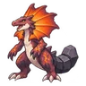

No.136
エンリツ
灯 通常
背の板が冷える順に赤く瞬く。工房では焼き物の温度を知らせる相棒。
基本データ
| 図鑑番号 | No.136 |
|---|---|
| タイプ | 灯タイプ |
| 進化 | 進化しない |
| 入手方法 | 燈鉄の工房街（Lv.31〜35）の草むらに出現。 |
Lv.50の能力値
| HP | 284 | |
|---|---|---|
| 攻撃 | 163 | |
| 防御 | 118 | |
| 特攻 | 166 | |
| 特防 | 117 | |
| 素早さ | 119 | |
| 命中 | 96 | |
| 回避 | 96 |
冒険中の能力値はレベルに応じて上がります。オンライン対戦の通常レンタルはLv.50で統一されます。
覚える技
| 技 | タイプ | 分類 | 威力 | 命中 | PP | 効果 |
|---|---|---|---|---|---|---|
| 炉辺の巡り | 灯 | 物理 | 38 | 88 | 15 | 与えたダメージの25%を分けてもらう。 |
| 炭火の拍子 | 灯 | 特殊 | 22 | 100 | 30 | 小さな炭火を軽快な拍子で飛ばす。 |
| 月鏡の和声 | 晶 | 物理 | 42 | 90 | 10 | 月を映す鏡の和声で攻める。 |
| 灰羽の外套 | 灯 | 防御 | — | — | 15 | 柔らかな灰の羽で、次の攻撃を半減する。 |
タイプ相性
灯タイプの技は芽タイプに強く（1.5倍）、潮タイプの技を受けると効果が大きくなります。同じタイプの技を使うと威力が1.15倍になります。